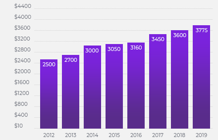
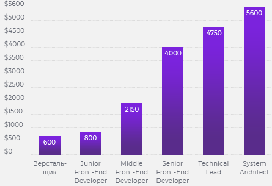

<section class="choose">
  <div class="container container_graph">
    <h2 class="choose__title section__title">Почему выбирают IT</h2>
    <ul class="choose-list">
      <li class="choose-list__item">
        <p class="choose__description_small">
          Кроме интересных проектов и инновационной деятельности, работа в сфере
          информационных технологий имеет ряд весомых преимуществ.
        </p>
        
        <div class="choose__text-wrapper">
          <p class="choose__text">
            Высокая оплата труда
            <span class="choose__text_bold">Front-End </span> разработчиков
          </p>
        </div>
      </li>
      <li class="choose-list__item">
        <p class="choose__description_small">
          <span class="choose__description_light">Оплата труда младших IT специалистов в Украине стартует от
            $650.</span>
          Доход старшего специалиста начинается от $2000 и доходят до $4000 у
          управленцев.
        </p>
        
        <div class="choose__text-wrapper">
          <p class="choose__text">
            Высокая оплата труда
            <span class="choose__text_bold">QA Engineer </span>
          </p>
        </div>
      </li>
    </ul>
    <h3 class="choose-qwe">А сколько хотите зарабатывать вы?</h3>
  </div>
</section>
